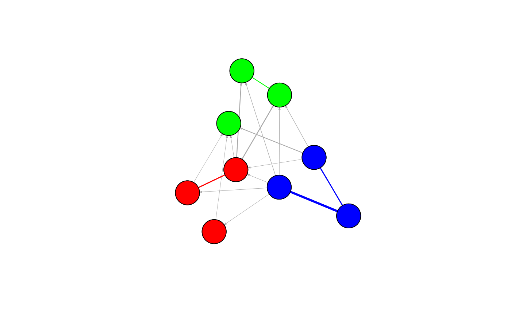

Plot the graph of MixedGraph object using igraph, cytoscape and cytpscape.js.
# S3 method for MixedGraph plot(x, method = c("igraph", "cytoscape", "cytoscape.js"), weighted = FALSE, stability = 0, out.file = NULL, ...)
| x | is a MixedGraph object. |
|---|---|
| method | is the related package or lib used in the function. When "igraph", the function will use the R package "igraph". When "cytoscape", the function will use the R package RCy3, the user should start the Cytoscape software before call the function. And when "cytoscape.js", the function will use the lib cytoscape.js. |
| weighted | is a boolean value, which indicates if we would plot the width of edge according to the weight of edge. |
| stability | is the stability threshold, when the stability score of the edge is more than it means the coefficient between the two vertices can be trusted. |
| out.file | is the file name to save the plot of MixedGraph object. The default value is NULL, and the graph will be plotted to the screen. |
| ... | other arguments for different methods.
|
X <- lapply(1 : 3, function(x){matrix(rnorm(12), nrow = 4)}) crf_structure = matrix(c(1, 0, 1, 1, 1, 1, 0, 0, 1), 3, 3) brail_control <- list(B = 5, tau = 0.6) G <- MixedGraph(X, crf_structure, brail_control = brail_control) plot(G, method = "igraph", weighted = TRUE)plot(G, method = "cytoscape.js", out.file = "./docs/cytoscapejs.html")#> Create the dir ./docs#> Warning: file("") only supports open = "w+" and open = "w+b": using the former#> Error in dirname(to): a character vector argument expected